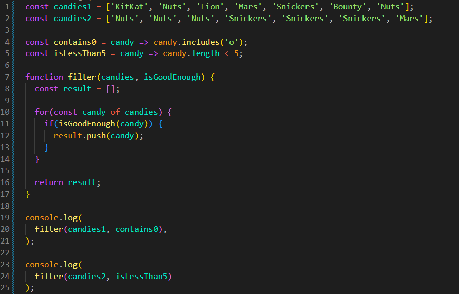
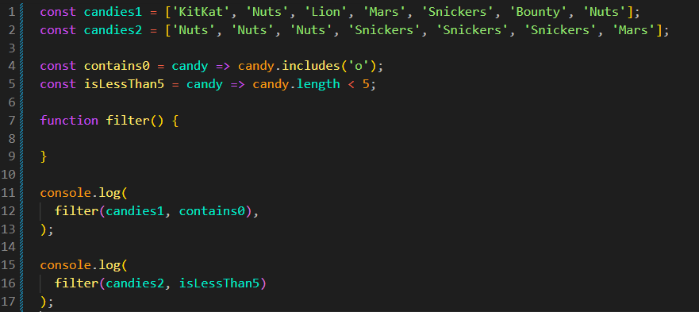

Filter with Callback
Intro
Agora iremos continuar nossa familiarização com callbacks e seu uso prático.
Agora iremos continuar nossa familiarização com callbacks e seu uso prático.
JS:


Podemos observar que temos dois arrays com nomes de doces. Feito isso, iremos criar uma função de filtro, para podermos filtrar os doces. Para isso, temos duas funções que serão utilizadas como callbacks.
const contains0 = candy => candy.includes('o');
Essa primeira função irá verificar se o nome do doce possui a letra 'o'. Caso possua, ela retornará true. Caso contrário, retornará false.
const isLessThan5 = candy => candy.length < 5;
Essa segunda função irá verificar se a quantidade de caracteres do nome do doce é inferior a 5. Caso seja, ela retornará true. Caso contrário, retornará false.
function filter(): ficará encarregada de 3 coisas:
Primeiro, fazer a iteração de nossa lista de doces.
Segundo, verificar, através da callback, se a condição foi atendida.
Terceiro, retornar os doces que passaram na verificação.
function filter(candies, isGoodEnough) {
const result = [];
for (const candy of candies) {
if (isGoodEnough(candy)) {
result.push(candy);
}
}
return result;
}
Iniciamos criando nossa function filter. Nela teremos dois parâmetros: candies (recebe o array) e isGoodEnough (recebe a callback).
Iniciamos criando uma variável vazia para podermos armazenar os valores que desejamos, nesse caso, os doces que passarem na verificação. Criamos essa variável porque nossa função precisa retornar apenas os doces que atenderem à condição definida pela callback.
for (const candy of candies) aqui iremos fazer um loop for of, porque não precisamos acessar os índices do array. Precisamos apenas passar pelos valores de candies. A cada repetição, o valor atual será armazenado em candy.
if (isGoodEnough(candy)), nessa parte estamos executando nossa callback e passando o doce atual como argumento. Caso a callback retorne true, o código dentro do if será executado.
result.push(candy); caso a callback retorne true, adicionamos o doce atual ao array result. Usamos o .push() porque estamos trabalhando com um array e queremos adicionar um novo valor ao final dele.
return result; por fim, retornamos o array result, que contém apenas os doces que passaram na verificação da callback.